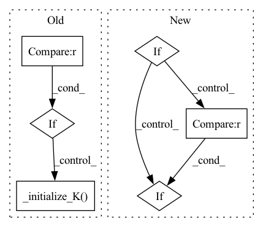

Pattern ID :12579
Before Change
pred_batch, y_batch = pred_batch.view(-1, pred_batch.shape[-1]), y_batch.view(-1, y_batch.shape[-1])
self.zero_grad()
y_batch.backward(torch.ones_like(y_batch))
if self.K is None :
self._initialize_K(m=y_batch.shape[-1])
for pred, y in zip(pred_batch, y_batch):
self._single_datum_step(pred, y)
def _try_put_on_device(self, trainer):After Change
if self.reduction == "mean":
error = error.mean(dim=0).unsqueeze(0)
psi = [psi_i.mean(dim=0).unsqueeze(0) for psi_i in psi]
elif self.reduction == "none" :
pass
else:
raise ValueError(f"reduction must be one of "mean", "sum", "none", got {self.reduction}")In pattern: SUPERPATTERN
Frequency: 3
Non-data size: 6
Instances Fragment ID: 42763196
Project Name: neurotorch/neurotorch
Commit Name: 8419aed1db7d78e03c5884959079672a5525f279
Time: 2022-10-20
Author: 50332514+JeremieGince@users.noreply.github.com
File Name: src/neurotorch/learning_algorithms/weak_rls.py
M Class Name: WeakRLS
N Class Name: WeakRLS
M Method Name: _batch_step(2)
N Method Name: _batch_step(2)
M Parent Class: LearningAlgorithm
N Parent Class: LearningAlgorithm
M File Name: src/neurotorch/learning_algorithms/weak_rls.py
N File Name: src/neurotorch/learning_algorithms/weak_rls.py
M Start Line: 202
M End Line: 213
N Start Line: 218
N End Line: 235
Before Change
pred_batch = trainer.format_pred_batch(trainer.current_training_state.pred_batch, y_batch)
model_device = trainer.model.device
if self.K is None :
self._initialize_K(m=y_batch.shape[-1])
// self._initialize_K(m=1)
self._try_put_on_device(trainer)
self._batch_step(trainer, **kwargs)After Change
y_batch = trainer.current_training_state.y_batch
pred_batch = trainer.format_pred_batch(trainer.current_training_state.pred_batch, y_batch)
if self._is_recurrent:
for layer_name in self._layers_buffer:
backward_t = len(self._layers_buffer[layer_name])
if backward_t > 0 :
self._backward_at_t(self._data_n_time_steps - 1, backward_t, layer_name)
else:
self._batch_step(trainer, **kwargs) Fragment ID: 42763186
Project Name: neurotorch/neurotorch
Commit Name: abfe488c72bd4e8d1b43173d73a5cdf349bf022d
Time: 2022-10-28
Author: 50332514+JeremieGince@users.noreply.github.com
File Name: src/neurotorch/learning_algorithms/weak_rls.py
M Class Name: WeakRLS
N Class Name: WeakRLS
M Method Name: on_optimization_begin(2)
N Method Name: on_optimization_begin(2)
M Parent Class: TBPTT
N Parent Class: LearningAlgorithm
M File Name: src/neurotorch/learning_algorithms/weak_rls.py
N File Name: src/neurotorch/learning_algorithms/weak_rls.py
M Start Line: 281
M End Line: 290
N Start Line: 356
N End Line: 364
Before Change
pred_batch = trainer.format_pred_batch(trainer.current_training_state.pred_batch, y_batch)
model_device = trainer.model.device
if self.K is None :
self._initialize_K(m=y_batch.shape[-1])
// self._initialize_K(m=1)
self._try_put_on_device(trainer)
self._batch_step(trainer, **kwargs)After Change
y_batch = trainer.current_training_state.y_batch
pred_batch = trainer.format_pred_batch(trainer.current_training_state.pred_batch, y_batch)
if self._is_recurrent:
for layer_name in self._layers_buffer:
backward_t = len(self._layers_buffer[layer_name])
if backward_t > 0 :
self._backward_at_t(self._data_n_time_steps - 1, backward_t, layer_name)
else:
self._batch_step(trainer, **kwargs) Fragment ID: 42763187
Project Name: neurotorch/neurotorch
Commit Name: 3eb1826136f87b5901e851d86edeacfcf8ffbe45
Time: 2022-10-29
Author: 50332514+JeremieGince@users.noreply.github.com
File Name: src/neurotorch/learning_algorithms/curbd.py
M Class Name: CURBD
N Class Name: CURBD
M Method Name: on_optimization_begin(2)
N Method Name: on_optimization_begin(2)
M Parent Class: TBPTT
N Parent Class: LearningAlgorithm
M File Name: src/neurotorch/learning_algorithms/curbd.py
N File Name: src/neurotorch/learning_algorithms/curbd.py
M Start Line: 261
M End Line: 270
N Start Line: 347
N End Line: 355